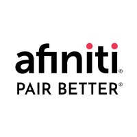

Asjad Asif Jah
Engineering Manager
Asjad Asif Jah
About Me
My story began when I completed my undergraduate degree at the National University of Sciences and Technology (NUST) Islamabad in 2016. In 2020, I received the Fulbright Scholarship for my Master's in Spatial Data Science at the University of Southern California. During my graduate degree, I focused on integrating Spatial Data with Machine Learning and Artificial Intelligence to solve geospatial problems.
After graduating in 2016, I started working as a back-end software engineer for the first couple of years of my career, then gradually moved towards fullstack software engineering roles. During my career, I have architected and built scalable software systems from scratch, writing front-end and back-end code, leading a team of developers, performing DevOps, and ensuring customer satisfaction. I paused my career in 2020 at the level of Senior Software Engineer after receiving the Fulbright Scholarship.
After completing my graduate degree in May 2022, I returned to Pakistan and joined Airlift Technologies as an Associate Engineering Manager. Since Airlift Technologies shut down operations in July, I joined another product start-up in August called Byte as an Engineering Manager. Byte was also not spared from the financial hit that a lot of companies have been taking in the recent past. Now I have joined a UAE-based startup, Aura, working in the FinTech space. I am very enthusiastic about working at product start-ups, and I look forward to the next phase of my professional career.
I read business and tech-related books. I am an avid PC gamer, and my favorite genre is FPS. I also like watching sci-fi, horror, and thriller movies and series.
- February 27
- Pakistan
- asjadjah@gmail.com
- +92 342 507 4909
Summary
A fullstack senior software engineer with experience working at both start-ups and enterprises, possessing technical leadership experience and additional skill set in spatial application development. Proven expertise in multiple frameworks for developing state-of-the-art software and exceptional analytical and problem-solving capabilities. A team player and an enthusiastic individual with an initiative-driven approach to work in particular and life in general.
Interesting Fact
As a kid, I collected coins of various denominations belonging to different countries. My coin book had coins of various denominations from over 30 countries, including those from pre-partition India. I used to restore the coins as much as possible before safely storing them in my coin book.
What I Do
Career Overview
Years of Experience
Organizations
6Universities
2Publications
1Certifications
1Resume
Experience
2024 - Present
AuraTechnical Lead
Working as a technical lead to build Aura from ground-up.
2022 - 2024
Byte (YC S20)Engineering Manager
Worked as an engineering manager in the Engineering team to deliver both internally and externally used web and mobile products. Also filled in as the fullstack team lead actively involved in designing and developing critical features and applications using Angular + Node.js. Led a team of 10 engineers (Fullstack + Mobile + DevOps + QA) ensuring high-quality design, development, and deployment of new business functionalities through active code review and feedback. Also ensured the career growth of the engineers by actively working to improve the skills of the engineering talent.
2022 - 2022
Airlift Technologies Islamabad, PakistanAssociate Engineering Manager
Worked as an associate engineering manager in the Warehouse Operations team to deliver web and mobile products used in the Airlift warehouses. Worked as a fullstack developer with hands-on development on Angular + Node.js. Managed a team of 6 engineers (Fullstack + Android + Automated QA)
2020 - 2022
The Fulbright Program Los Angeles, CA, United StatesFulbright Scholar
The Fulbright Scholarship award is a competitive program that selects academically and professionally high-achieving individuals for a fully-funded Master's program in the United States. The individuals selected have a track record of accomplishment and are highly motivated in their future goals and aspirations.
2019 – 2020
Afiniti  Islamabad, PakistanSenior Software Engineer
Software Engineer
Worked as a fullstack software engineer in the Engineering team on the
following projects:
Afiniti Core - Configuration Server
Role: Project Lead and Backend Developer (Node.js + C++)
Managed a team of 4 engineers (Node.js + React.js + C++)
Config Server – Transformation App
Role: Project Lead and Backend Developer (Python)
Afiniti MegaACD
Role: Fullstack Developer (Node.js + GraphQL + React.js)
Afiniti IME/AiRo
Role: Backend Developer (Node.js + GraphQL)
Afiniti Core - Lookup Service
Role: Backend Developer (C++)
2017 – 2019
LMKR Islamabad, PakistanApplication Engineer
Worked as a Java software engineer for Halliburton on developing data integration, federation, and interoperability between multiple Oil & Gas Exploration & Production software. Key responsibilities included the development of Teiid connectors and translators to expose data using data virtualization, patching various modules of the application for smooth flow of data to/from multiple connectors, extending Apache Thrift server and client implementation in Java, C#, and C++ for various connectors, moving Teiid connectors to Docker, development of unit and integration tests for multiple connectors, and automation of tests after integration with Docker.
2016 – 2017
TPL Maps Islamabad, PakistanGIS Developer
Worked on a wide array of projects using Java, Python, and C++ and implemented them on multiple platforms, including Desktop, Server, Web, and Android. A few significant highlights include the development of a Python server application to generate secure, encoded, and small-sized vector map tiles, implementation of a graph-based routing algorithm in Java, development of multiple data QA Java applications to detect GIS data anomalies, automated language translation of map data, development of a mechanism to convert satellite images to raster map tiles for loading them offline inside an android application, and addition of new features in the native C++ library for map rendering.
Education
2020-2022
University of Southern CaliforniaMaster of Science (M.S.)
Spatial Data Science
CGPA: 4.00/4.00
Fulbright Scholarship
Foundations and Applications of Data Mining
MapReduce, Frequent Itemsets, Shingling, Minhashing, Locality
Sensitive Hashing, Recommendation Systems, Analyzing Massive Graphs,
Mining Data Streams, Link Analysis, Web Advertising
Machine Learning for Data Science
Linear/Logistic Regression, Bayesian Theory, Classification/
Clustering, Parametric/Non-Parametric Models, Supervised/
Unsupervised Learning, Neural Networks, NLP, Random Forests,
Generative Models
Foundations of Data Management
Project: Satellite Tracker
Storage & File Systems, Hadoop Distributed File System (HDFS),
Data Modeling (ER & Relational), Indexing (B+-Tree), Query
Execution, Python Pandas, Apache Spark, Hadoop MapReduce
Web Technologies
HTML, CSS, Javascript, JSON, Dart, Rust, WebAssembly, DOM, HTTP(S),
Responsive Web Design, Node, Angular, React, Flutter, Android/iOS,
Serverless, Web3
Spatial Data Science
Project: Spatial Machine Learning Workflow
GeoAI, Spatial Data Representation/Wrangling, Exploratory
Spatial
Data Analysis, Spatially Explicit Supervised/Unsupervised Learning,
Spatially Explicit Neural Networks, Spatial Optimization,
Prescriptive Spatial Machine Learning
Spatial Databases
Database Architecture, Data Modeling, SQL, ESRI Databases, Spatial
Querying, Spatial Indexing, Object-Oriented Databases, NoSQL
Databases, Time-Enabled Spatial Databases, Spatial Big Data,
Geospatial Infrastructure
GIS Programming and Customization
Python for Vector/Raster Data Manipulation, Python in ArcGIS,
Interactive Computational Geospatial Programming, Notebooks for Web
GIS, Real-Time Spatial Data Processing, Spatial Data in an IoT
Era
Concepts for Spatial Thinking
Spatial Autocorrelation, Spatial Heterogeneity, Raster and Terrain
Analysis, Spatial Estimation & Interpolation, Spatial Modeling,
Modeling with Machine Learning, Geospatial Intelligence
2012-2016
National University of Sciences & Technology (NUST) Islamabad, PakistanBachelor of Engineering (B.E.)
CGPA: 3.71/4.00 PEC Registered EngineerSkills
Programming Languages
- Java
- C
- C++
- Python
- Scala
- TypeScript
- JavaScript
Databases
- PostgreSQL
- MySQL
- Oracle
- SQL Server
- MongoDB
- Firebase
Data Science
- Pandas
- DataFrames
- Hadoop DFS
- Hadoop MapReduce
- Apache Spark
Frameworks
- Spring
- Jersey
- Nest.js
- Teiid
- Thrift
- Hibernate
- PySpark
Build Tools
- Maven
- Gradle
- Webpack
APIs/Libraries/Middleware
- Kong
- Keycloak
- GraphQL
- Apollo
- RabbitMQ
- Auth0
- HashiCorp Vault
- Google Maps
Deployment
- Apache Tomcat
- Glassfish
- Wildfly
- Heroku
- AWS
- Serverless
- Google Cloud
Versioning/Issue Tracking
- Git
- Jira
- TFS
- Taiga
DevOps
- Docker
- Kubernetes
- Jenkins
- Bamboo
Web Development
- Django
- Angular
- Node.js
- React.js
- HTML
- CSS
- MaterialUI
- Bootstrap
AWS
- EC2
- Lambda
- DynamoDB
- SQS
- SES
- S3
- ApiGateway
- ElasticBeanStalk
Geospatial Solutions
- ArcGIS Pro
- QGIS
- PostGIS
- ArcMap
- JTS
- GeoTools
Operating Systems/Devices
- Windows
- Linux (multiple flavors)
- Raspberry Pi
- Arduino
Research Publications
Cloud vector mapping using MODIS 09 Climate Modeling Grid (CMG) for the
year 2010 and 2011
Asjad Asif Jah, Yousaf Bin Farrukh, Rao Muhammad Saeed Ali
Citation: Asjad Asif Jah et al. 2013 IOP Conf. Ser.: Mater. Sci. Eng. 51 012029
Abstract also available at The SAO/NASA Astrophysics Data System: https://ui.adsabs.harvard